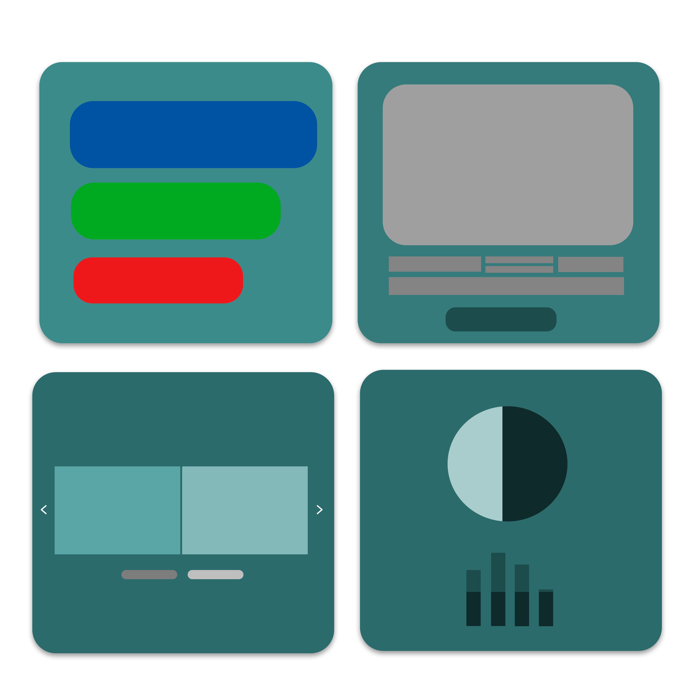

O App Replicador de Componentes
É Um gerador de Componentes, baseado em Componentes do Bootstrap e com possibilidade de Edição dos Componentes.
Começar »

É Um gerador de Componentes, baseado em Componentes do Bootstrap e com possibilidade de Edição dos Componentes.
Começar »